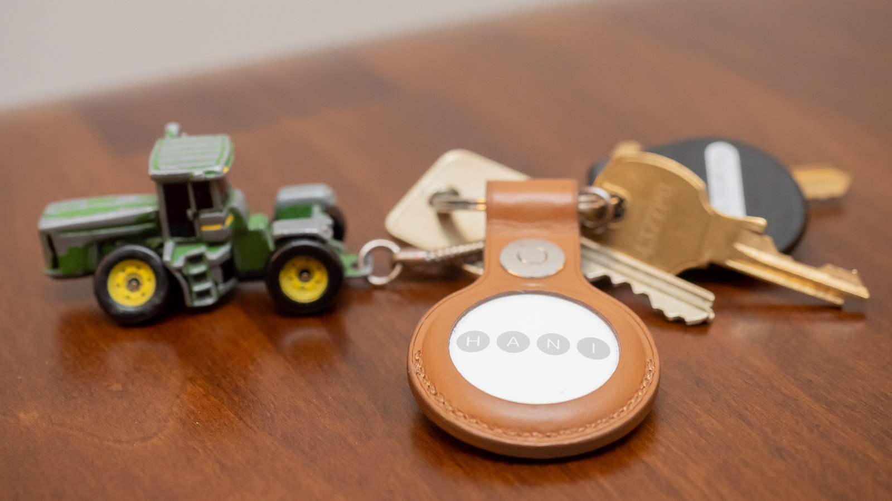

The Autopsy Report · Device #098
The Apple AirTag (2021)
Apple's answer to the Tile: a coin-sized tracker with ultra-wideband precision finding, a Nordic Bluetooth chip, and a user-replaceable battery. We haven't opened one — but this is the best-documented board in the batch.
What is this thing?
The AirTag, model A2187, is Apple's item tracker: attach it to keys or luggage, and the Find My network — hundreds of millions of Apple devices — relays its location back to you. Its party trick is ultra-wideband: with a U1-equipped iPhone, the app points you to the tag with directional precision, not just "it's nearby." A user-replaceable CR2032 coin cell powers it. iFixit teardown Independent AirTag documentation
Not yet on our bench
We don't own an AirTag, so nothing here comes from our hands: no disassembly, no board photos, no measurements. Everything below is built from public records — the FCC certification filing, iFixit's teardown, and independent technical documentation — with each claim linked to its source. When a unit lands on our bench, we'll verify the hardware firsthand and update this page.
A short history
- August – November 2019Apple's "Tracking Tag," model A2187, goes through FCC radio testing. FCC RF exposure report
- June 15, 2019Apple's confidentiality letter for the filing requests permanent secrecy for block diagrams, schematics, technical descriptions, and antenna details. FCC confidentiality letter
- September 8, 2020The FCC test report (12791034-E1V2) is issued. FCC test report
- April 2021Apple announces the AirTag; it goes on sale the same month with the U1 chip and Precision Finding. iFixit teardown
The outside
A stainless-steel-and-plastic coin, 31.9 mm across, with no holes, no buttons, and no charging port — the back twists off to swap the CR2032. The speaker plays the find-me tone through the housing itself. iFixit teardown

The board
iFixit's teardown found a dense little round board: Apple's U1 ultra-wideband chip beside a Nordic nRF52832 handling Bluetooth, GigaDevice flash, and a small constellation of power and audio parts — a buck converter, a load switch, an op-amp, and a digital audio amplifier driving the speaker. Independent documentation of the AirTag's radios records ultra-wideband operation on channels 5 and 9 (6.5 and 8 GHz) with 500 MHz of bandwidth. iFixit teardown Independent AirTag documentation EDN teardown
The FCC filing's schematics and block diagram are permanently confidential — Apple sealed the design documents while the teardowns mapped the silicon. FCC confidentiality letter
Under the microscope: the chips
What's on the board, what each part does, and how sure we are. Confirmed means a primary source (FCC exhibit or manufacturer document). Likely means well-corroborated public records.
| Chip | What it does | How we know | Dig deeper |
|---|---|---|---|
| Apple U1 | Ultra-wideband radio — the precision-finding engine that measures distance and direction to your iPhone. | Likely Identified in iFixit's teardown and corroborated by independent radio documentation (UWB ch. 5/9). | iFixit teardown |
| Nordic nRF52832 | Bluetooth Low Energy SoC — the tag's everyday radio and main controller (64 MHz Cortex-M4, 512 KB flash, 64 KB RAM per Nordic's product data). | Likely Identified in iFixit's teardown; specs from Nordic via distributor product page. | Nordic product data (Mouser) |
| GigaDevice GD25LE32D 32 Mbit SPI flash |
External flash storage for firmware and data. | Likely Identified in iFixit's teardown. | iFixit teardown |
| Maxim MAX98357B | Digital audio amplifier — drives the find-me speaker. | Likely Identified in iFixit's teardown. | iFixit teardown |
| TI TLV9001 · onsemi FPF2487 · TI TPS62746 | Op-amp, load switch, and buck converter — the power and signal-conditioning support crew. | Likely Identified in iFixit's teardown. | iFixit teardown |
The government's file on this tag
The AirTag carries FCC ID BCGA2187, grantee Apple Inc., model A2187, described as a tracking tag. Radio testing ran August 5 through November 4, 2019; the test report was issued September 8, 2020. Apple's June 15, 2019 confidentiality letter keeps the block diagrams, schematics, technical descriptions/specifications, and antenna gain/location permanently confidential, while the photos and user manual took 180-day short-term confidentiality. We could not verify the exact grant date from the exhibits we reviewed, so we don't state one. FCC RF exposure report FCC test report FCC confidentiality letter
Debug and service modes
Public teardowns document the board's layout read-only; we publish no instructions for disabling the speaker, defeating anti-stalking alerts, or accessing debug interfaces — those would be modifications with real safety consequences for others, and they're outside this project's scope. Our posture throughout: we listen, we don't knock. If a bench unit ever reveals a diagnostic interface, we'll document it read-only — never bypasses, never credential or key extraction.
What public records show
- Two radios, two jobs: Bluetooth for the crowd-sourced Find My network, ultra-wideband for the last few meters of precision. The board's whole architecture follows from that split. iFixit teardown
- The UWB channels are documented in the open: channels 5 and 9 at 6.5/8 GHz with 500 MHz bandwidth — the wide channel is what makes the ranging precise. Independent AirTag documentation
- Apple's filing predates the announcement by nearly two years — the hardware was certified long before the product existed publicly. FCC RF exposure report
What we haven't done
- No disassembly — we don't own a unit.
- No board-level verification of any chip identity in the table above.
- No radio measurements (BLE or UWB) of our own.
- No firmware observation, and no modification or bypass of any kind.
By the numbers
- Model: A2187 (AirTag) · FCC ID: BCGA2187 · Grantee: Apple Inc.
- Radios: Bluetooth LE (Nordic nRF52832) + ultra-wideband (Apple U1; ch. 5/9, 6.5/8 GHz, 500 MHz BW)
- Flash: 32 Mbit SPI (GigaDevice GD25LE32D) · Battery: user-replaceable CR2032
- FCC testing: Aug 5 – Nov 4, 2019 · Announced: April 2021
Words to know
Every term this page uses, in plain English. No prior knowledge required.
- Ultra-wideband (UWB)
- A short-range radio that measures distance by timing how long signals take to travel — accurate to centimeters, which is why your phone can point at the tag.
- Precision Finding
- Apple's name for the UWB-guided "it's 3 feet to your left" interface on U1-equipped iPhones.
- Find My network
- Apple's crowd-sourced location system: nearby Apple devices anonymously relay a tag's Bluetooth beacon to its owner.
- Bluetooth Low Energy (BLE)
- A power-sipping flavor of Bluetooth for small devices that mostly sleep and occasionally chirp.
- Buck converter
- A power-supply circuit that steps voltage down efficiently — the board's way of sipping the coin cell gently.
- Load switch
- A chip that switches power to parts of the board on and off — how the tag sleeps most of the time.
- FCC
- The Federal Communications Commission — the U.S. agency that regulates anything that transmits radio. Every wireless gadget sold here has to pass its tests first.
- FCC ID
- The ID the FCC assigns to each approved wireless product. Punch it into fccid.io and the whole public filing comes up.
Sources & confidence
- FCC ID, grantee, model, testing dates, confidentiality scope: FCC exhibits. Confirmed (primary source).
- Chip identities (U1, nRF52832, GD25LE32D, MAX98357B, TLV9001, FPF2487, TPS62746), board description, CR2032: iFixit teardown. Likely (published teardown; unconfirmed by us).
- Board corroboration: EDN teardown. Likely.
- UWB channels/bandwidth: independent technical documentation. Likely.
- nRF52832 specs: Nordic product data via distributor. Confirmed for the chip's specs.
- Device photo: Wikimedia Commons, CC BY 2.0.
- Anything not listed here is unknown until the bench says otherwise. We'll say so, out loud, when that's the case.
Legal note. BareBoard is an educational project. This report is built entirely from public records — we own no AirTag hardware and performed no testing. We don't publish, host, or distribute firmware, keys, passwords, or credentials, and we publish no instructions for modifying, silencing, or bypassing any safety feature. Product names and trademarks belong to their respective owners and appear here only to identify the hardware. If you believe anything here infringes your rights, contact us and we'll address it promptly.